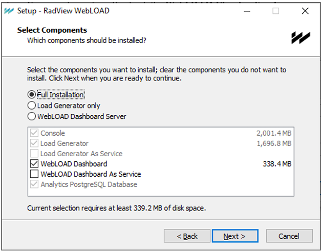
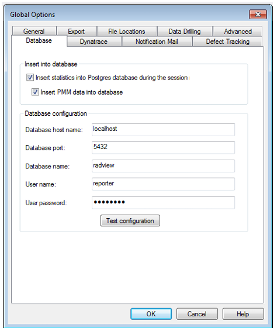

Installing WebLOAD Dashboard
This section describes the standard WebLOAD Dashboard installation process.
Installation Instructions
The WebLOAD Dashboard is part of the regular WebLOAD installation.
To install the WebLOAD Dashboard:
1.In the Select Components window of the WebLOAD installation wizard, select either of the following options:
-
Select Full Installation and check the WebLOAD Dashboard checkbox to have the WebLOAD Dashboard installed locally as part of a full installation. You can also optionally check the WebLOAD Dashboard as Service checkbox to register the installed WebLOAD Dashboard as a Windows service.
-
Select Cloud Server to only install the WebLOAD Dashboard.

Enabling WebLOAD Dashboard
As a prerequisite to using WebLOAD Dashboard, you must first, in the WebLOAD Console (version 10.2 and up), enable the importing of sessions to the desired database as follows.
- Select Tools > Global Options > Database.

-
Make sure the Insert statistics into Postgres database during the session checkbox is selected.
-
Select the Insert PMM data into database checkbox.